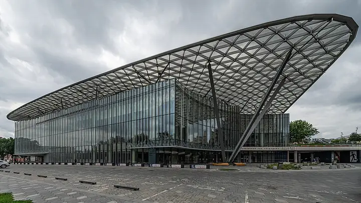

Подборку собрали 21 октября, прошедшие события скрыты. Свежая афиша — на главной

Фото: A.Savin, Free Art License · Wikimedia Commons
Концертный зал · ЦАО
Концертный зал «Зарядье»
Один из лучших залов страны по акустике, прямо в парке «Зарядье».
- ₽₽ · 1 500–3 000 ₽ на человека
- в 1 плане
- 6 событий в афише
Позвать сюда: Концертный зал «Зарядье»Открыть в каталоге: Концертный зал «Зарядье»Маршрут до места: Концертный зал «Зарядье»
Адрес и детали
- Адрес
- ул. Варварка, 6, стр. 4
Открыть на Яндекс Картах (в новой вкладке) - Метро
- м. Китай-город
- Округ
- Центр (ЦАО)
- Цена
- 1 500–3 000 ₽ на человека
- Телефон
- +7 (499) 222-00-00
- Проверено
- работает — проверили в октябре 2026
Планы с этим местом 1
- Парк «Зарядье» · Парк · м. Китай-город
- 2 минуты пешкомКонцертный зал «Зарядье» · Концертный зал
Вид на Кремль с Парящего моста, а потом живая музыка в одном из лучших по акустике залов страны — прямо в том же парке.
Открыть план: Парящий мост и концерт в ЗарядьеПозвать сюда: Парящий мост и концерт в Зарядье
Фото: Alina Vozna, CC BY-SA 4.0 · Wikimedia Commons

Афиша площадки 6
Концертный зал «Зарядье», Большой зал · м. Китай-город · от 500 ₽ · 6+
Три органиста исполняют Таривердиева — концерт «Кассандра» и симфонию «Чернобыль» — на большом органе «Зарядья». Билеты от 500 ₽, после — Парящий мост.
Подробнее: Органный концерт к 95-летию Микаэла ТаривердиеваПозвать сюда: Органный концерт к 95-летию Микаэла ТаривердиеваБилеты : Органный концерт к 95-летию Микаэла Таривердиева (страница с билетами, откроется в новой вкладке)
Фото: A.Savin, Free Art License · Wikimedia Commons
Концертный зал «Зарядье», Малый зал · м. Китай-город · от 700 ₽ · 6+
Джазовый критик рассказывает историю альбома Getz/Gilberto, а гитарист исполняет песни с пластинки. Мягкая босанова для камерного вечера.
Подробнее: Живое исполнение культовых альбомов. Getz / GilbertoПозвать сюда: Живое исполнение культовых альбомов. Getz / GilbertoБилеты : Живое исполнение культовых альбомов. Getz / Gilberto (страница с билетами, откроется в новой вкладке)
Фото: A.Savin, Free Art License · Wikimedia Commons
Концертный зал «Зарядье», Малый зал · м. Китай-город · от 800 ₽ · 6+
Чайковский в джазе: секстет Андрея Зимовца с Петром Востоковым и Александром Козловым переигрывает «Времена года» по-своему. Будет что обсудить после.
Подробнее: «Времена года». Джазовая версияПозвать сюда: «Времена года». Джазовая версияБилеты : «Времена года». Джазовая версия (страница с билетами, откроется в новой вкладке)
Фото: A.Savin, Free Art License · Wikimedia Commons
Концертный зал «Зарядье» · м. Китай-город · 7 000–25 000 ₽ · 6+
Сольный вечер Мацуева перед праздниками: «Времена года» Чайковского и его Большая соната. Зал «Зарядье» славится акустикой — стоит взять места заранее.
Подробнее: Денис МацуевПозвать сюда: Денис МацуевБилеты : Денис Мацуев (страница с билетами, откроется в новой вкладке)
Фото: A.Savin, Free Art License · Wikimedia Commons
Концертный зал «Зарядье», Большой зал · м. Китай-город · от 500 ₽ · 6+
В Рождество днём — хоралы Баха и сюита из «Щелкунчика» на органе. Концерт заканчивается рано, потом можно гулять к Красной площади.
Подробнее: Рождественские сны. Лада Лабзина, органПозвать сюда: Рождественские сны. Лада Лабзина, органБилеты : Рождественские сны. Лада Лабзина, орган (страница с билетами, откроется в новой вкладке)
Фото: A.Savin, Free Art License · Wikimedia Commons
Концертный зал «Зарядье», Большой зал · м. Китай-город · от 1 200 ₽ · 6+
Кубинский пианист и обладатель «Грэмми» привозит новый альбом. Джаз мирового уровня, а билеты начинаются с 1200 ₽.
Подробнее: Гонсало Рубалькаба, фортепиано (Куба)Позвать сюда: Гонсало Рубалькаба, фортепиано (Куба)Билеты : Гонсало Рубалькаба, фортепиано (Куба) (страница с билетами, откроется в новой вкладке)
Фото: A.Savin, Free Art License · Wikimedia Commons

Похожие рядом


Что ещё рядом
Как позвать
- Выбери план, место или событие — в карточке адрес, цены и маршрут в Яндекс Картах.
- Нажми «Позвать сюда» — соберётся приглашение-игра для свидания или голосование для компании.
- Отправь ссылку в любой мессенджер: тебе ответят, а компания отметит, куда и когда может. Бесплатно и без регистрации.